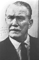

Country:United States, 79 minutes
Spoken languages:
Genres:Drama, Thriller, Crime
Director(s):Anthony Mann, Alfred L. Werker
Writer(s):John C. Higgins, Crane Wilbur
Video Codec:Unknown
Number: 1745


Certification:NR
Storyline:
This film-noir piece, told in semi-documentary style, follows police on the hunt for a resourceful criminal who shoots and kills a cop.
Cast: 

Medium: Original DVD,
Comments: Part of: Mystery Classics - 50 Movie Pack
Loaned: No
Aspect ratio: Unknown